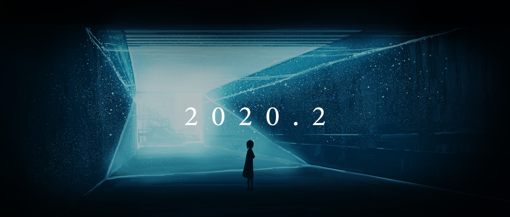

Object
How to build object: There are five ways to build a object in js
1.1 basic creation
const variableName = Object()
variableName.attribute=""
variableName.functionName = function(){}
1.2 access and set the features with bracket notation as well
variableName['attribute'] = ""
The second way to create the attribute in object
2.object literally
const variableName ={ attributeName:"", attributeName2:"", functionName(){}}
3.Using constructor function method to create a object Key word:function
fuction variableName (attributeName,attributeName1){
this.attributeName=""
this.attributeName1=""}
Using a function method way to create object like a constructor
4.Using constructor function method to create a object Key word:class
class variableName{
constructor (attributeName,attributeName1){
this.attributeName=""
this.attributeName1=""}}
5.class use another way to define
const variableName = class{
constructor (attributeName,attributeName1){
this.attributeName=""
this.attributeName1=""}}
Using the same way we did for function, give the object to a variable representing the object.
Video
Article
1. The first video helps a lot. Currently, what struggled me is how to design the framework of the website better or more beautiful. For the previous course, we talked a lot about the bootstrap to help us to design the website. Every time I want to make a 2 equal block in a row, the first thing comes to my brain is that col-md-6 in the bootstrap. In this video, I know there is an easier way to make it, just use keyword flex in css. The other question I met is how to make the background. In this video, he just uses several circles to makes it better. The third new thing is animation. This is the first time I know how to build an animation in css. It is cool to use the keyword keyframes to create our own animation and use the keyword animation to use it. The final thing answers how to design two UI for different devices. For some situations, smaller the picture is useless. Using the keyword @media screen and (max-width) to redesign the framework in different situations.
2. Tiny Clickable Areas. I agree with this question a lot. Especially, when I was using the phone to suffering, in some websites I want to read some articles, the clickable areas are too small to click the right button so that we went to some other website which may be harmful and waste the communication traffic. Duplicate page titles: Nowadays, more and more people use a mobile or other device to suffering. One important tip for mobile development is how to give enough information on a limited screen. In these cases, the duplicate page title is waste the money and the patience of the customer Too much functionality that requires registration: I am applying for different internships this year. Every time applying for a job online, the first thing is to register the account. The worst thing is that some registeration we spend too much time to fill in. It is a barrier when registration has too much stuff to fill in.
3. 7+-2 principle: in Chinese painting, we always leave white space to strengthen the key point 2-second rule: avoiding losing the patience of customers inverted pyramid: give the result first can be more efficient you don't use too small font size: it is hard for the customer to read to lose patience you don't have unclear link text: similar like tiny clickable area, waste the time and reduce the user experience baby-duck-syndrome: people like a similar system and design. I remember the first time I use the apple system, I feel too hard. after serval weeks, I get used to the system. eye-tracking: every time we took a picture, we will focus on the special position so this is the reason why most famous painting has a similar framework hotspot: using different appearance to show different function to save time for customer user-centered design: from the customer's perspective, we can find some mistake we did not realize Wireframe : using the wireframe make the website looks more organized
4. 1.availability and accessibility: make sure the customer can use the website easily. It is the foundation of the user experience 2.clarity: simplicity helps the user focus on what they want to improve user experience. clarity improve the quality of user experience 3.learnability: take advantage of the habit of the user to improve the user experience 4.credibility: trust is very important for tons of completive information online. for instance, trump always names cnn fake news. He wont come to cnn website forever. 5.relevancy: grouping by the customers narrows the customer characters to improve the service.